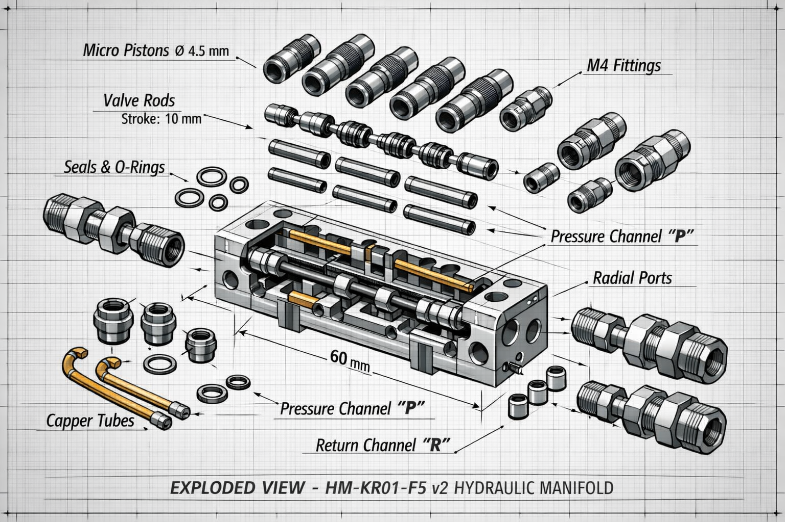
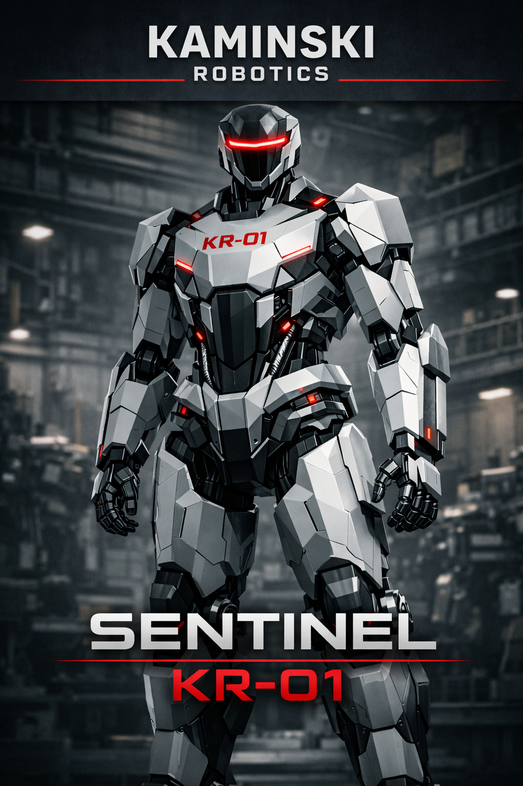
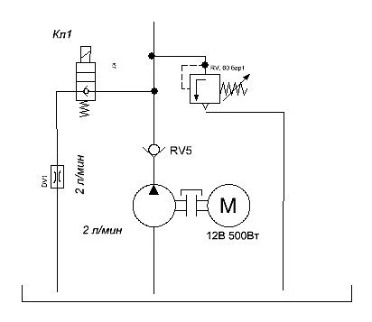
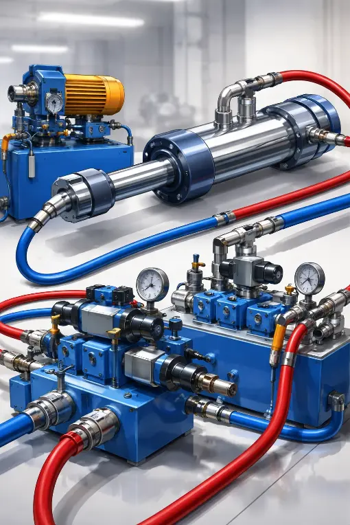

Hardware & Robotics | Sentinel KR-01
The Philosophy of Power
The Sentinel KR-01 is a next-generation heavy hydraulic humanoid platform engineered for high-load industrial operations and autonomous defense in extreme risk zones. Moving away from the fragile, sensor-dependent "circus robotics" that are confined to sterile laboratory environments and focus only on acrobatic tricks, Kaminski Robotics delivers a fully autonomous tactical machine. Built on principles of grit, raw engineering, and uncompromising discipline, the KR-01 is designed to dominate the physical world through superior mechanical force and unmatched structural durability.
5-Axis Monolithic Actuation & Kinetic Grip
The defining feature of the Sentinel KR-01 is its revolutionary hydraulic hand system. Instead of fragile electric servo motors that burn out under load, a high-precision 5-cylinder duralumin monolithic manifold is integrated directly into the forearm. Each dual-action cylinder features an 8mm bore and a 45mm stroke, operating via a highly complex internal fluid network based on high-pressure monolithic hydraulic plate principles. This core mechanism delivers a crushing 65 kg of pure axial force per single finger, accumulating to a devastating combined grip strength exceeding 325 kg. The platform is engineered to deform, bend, and manipulate heavy steel and concrete structures with absolute ease.
Silent Energy Storage & Fluid Power Accumulation
To power this monster, the Sentinel KR-01 utilizes a compact MP219 12V hydraulic power station operating at a brutal 130 Bar (13 MPa) of system pressure. To completely eliminate response latency and avoid the loud, continuous roar of a main power pump, we integrated a high-performance piston-type accumulator. This mechanical energy capacitor accumulates fluid pressure in complete silence, allowing the humanoid to execute rapid, explosive kinetic movements and maintain maximum grip force without running the electric motor constantly. This solution represents a pinnacle of fluid power optimization in humanoid robotics.

 5-Axis Hydraulic Manifold Engineering Draft
5-Axis Hydraulic Manifold Engineering Draft

Reinforced Tactical Frame Core AssemblyHigh-Pressure Fluid Core Engineering
The central architecture of the Sentinel KR-01 platform functions at an extreme system pressure of 130 Bar (13 MPa), ensuring maximum energy density. Driven by the compact, high-efficiency MP219 12V DC pump block, the fluid circuit maintains a stable volumetric efficiency even under peak overloads. By choosing a hydraulic drive over classical electric gearboxes, Kaminski Robotics completely eliminates structural compliance and thermal degradation of the joints, allowing the humanoid to execute heavy-duty power operations with consistently high performance.
Integrated Piston-Type Hydraulic Accumulators
To deliver rapid, explosive kinetic impulses without the continuous noise and battery drain characteristic of industrial pumps, we integrated a high-precision piston-type hydraulic accumulator. This mechanical energy storage unit holds the working fluid under extreme pressure, acting as a high-velocity fluid capacitor. It discharges its accumulated potential within microseconds, ensuring lightning-fast structural response, and maintains absolute clamping force in complete silence, allowing the humanoid to execute long-duration hold operations without running the main electric pump. This maximizes both energy efficiency and tactical stealth of the platform.
Seamless Copper Fluid Arteries
Such extreme system pressure requires an uncompromising energy distribution network. The Sentinel KR-01 is equipped with a specially engineered hydraulic grid constructed from high-grade, seamless, pre-bent copper tubing. Unlike flexible rubber high-pressure hoses (HP Hoses) that expand under load and cause volumetric power losses, our rigid copper mainlines ensure zero pressure drop and absolute hydraulic stiffness of the circuit. This monolithic construction guarantees instantaneous feedback from the valve block to the actuators, delivering sub-millimeter precision movement control in the harshest operational environments.
 5-Axis Hydraulic Manifold Engineering Draft
5-Axis Hydraulic Manifold Engineering Draft

 5-Axis Hydraulic Manifold Engineering Draft
5-Axis Hydraulic Manifold Engineering Draft

Reinforced Tactical Frame Core Assembly